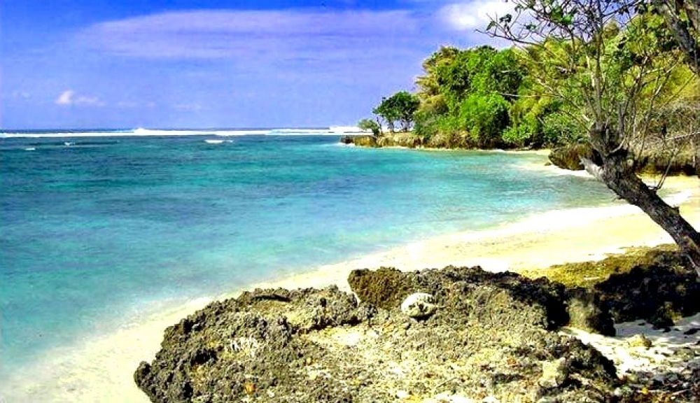

Nama Lengkap : Teguh Heru Wahyudi
Nim : 201855202073

PANTAI PLENGKUNG BANYUWANGI
Pantai Plengkung , atau lebih dikenal dengan nama G-Land, adalah pantai yang terletak dalam kawasan Taman Nasional Alas Purwo, Kabupaten Banyuwangi, Jawa Timur. Plengkung dapat dicapai selama setengah hari perjalanan darat dari Bali. Pantai Plengkung juga bisa dicapai dengan boat sewaan dari Bali. Pantai Plengkung berlokasi di bagian tenggara Pulau Jawa, berada dalam gugusan pantai selatan Jawa yang berhadapan langsung dengan Samudera Hindia, sehingga Pantai Plengkung termasuk pantai berombak besar. Ombak besar ini dihasilkan oleh sistem bertekanan rendah yang berasal dari selatan (Antartika). Pantai Plengkung juga terletak di sisi timur Teluk Grajagan, maka dari itu sisi kanan Pantai Plengkung memiliki ombak lebih dominan. Ombak Panjang Plengkung berbentuk memanjang, tinggi, dan berkecepatan tinggi. Ombak Pantai Plengkung juga membentuk tabung ombak hampir sempurna sehingga menjadi favorit para penggila olahraga surfing..